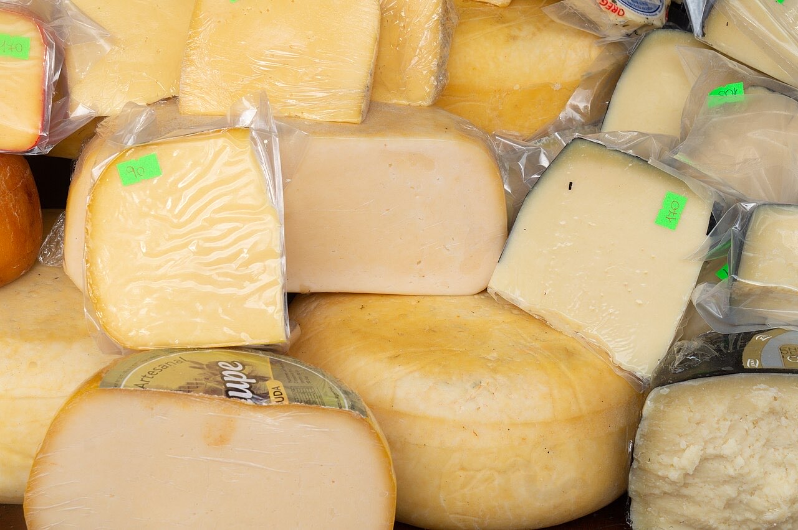
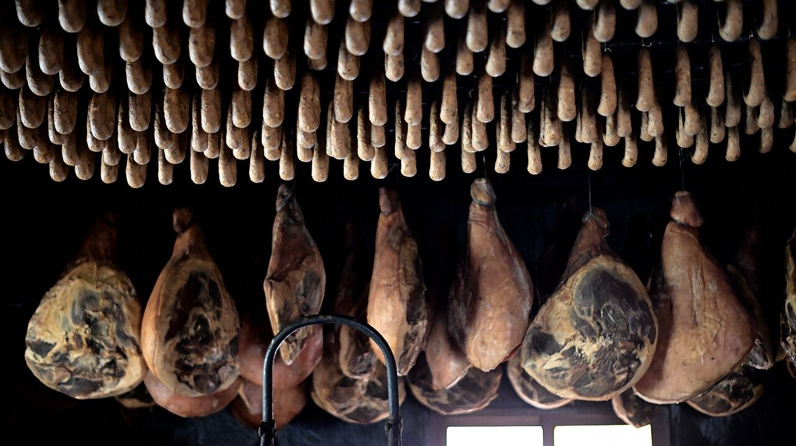
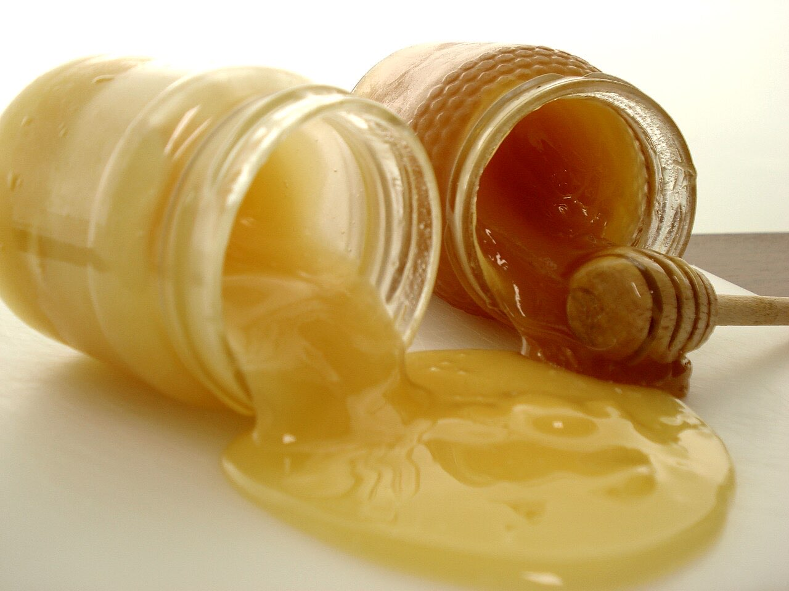

Mercearia gourmet / queijaria · Centro
Dezenas de queijos à sua espera
Queijos para provar, escolher e levar para a mesa.
Escolha à distância e levante na loja ou peça entrega.
Cadernos e pratos pintados à mão, para oferecer.
A Rota do Queijo é uma loja especializada em queijos na Alameda de São Dâmaso, no centro de Guimarães. Dezenas de variedades, com provas, e encomendas por WhatsApp.



Fotografias ilustrativas — no site final usamos as vossas.
Encomenda
Diga o que precisa e quando quer levantar (ou receber). Respondemos por WhatsApp.
↑ Assim chegaria a mensagem ao vosso WhatsApp. (Nesta demonstração nada é enviado.)
Onde estamos
Proposta para Rota do Queijo
Esta página foi feita de propósito para Rota do Queijo por João Machado, programador web aqui de Guimarães. Inclui:
Eu trato do alojamento e da manutenção. Sem compromisso.